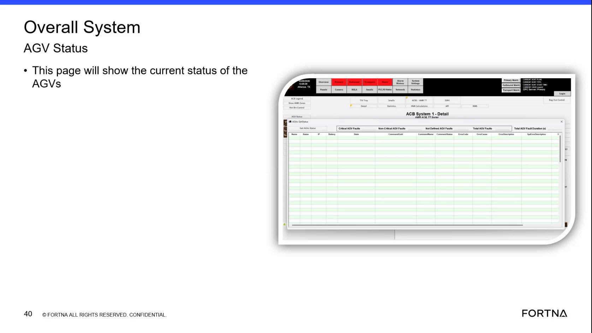

| Procedure ID | proc_view_current_auv_agv_status_in_the_overall_system_agv_status_pop_up_v1 |
|---|---|
| Title | View Current AUV/AGV Status In The Overall System AGV Status Pop-Up |
| Procedure Type | diagnostic |
| Primary Role | operator |
| Support Safe | Yes |
| Validation Status | needs_sme_review |
| Merge Status | source_finalized |
Use the HMI status pop-up or page labeled "Overall System AGV Status" to view detailed current AUV/AGV system status information shown by the source training segment.
Use when an operator or support user needs to inspect the current status details shown in the HMI status display identified in the training as the AUV status pop-up and shown on screen as "Overall System AGV Status."
Responsible role: operator
Instruction:
Open or navigate to the AUV status pop-up referenced in the training segment, identified on screen as "Overall System AGV Status." Use the available HMI or displayed training screen to bring this status view into view.
Expected result:
The status pop-up or page is visible to the user.
Screens / Images:

Stop or Escalate If:
Responsible role: operator
Instruction:
Confirm that the displayed page is the status view by checking for the title text "Overall System AGV Status."
Expected result:
The page title matches the source-supported status view.
Screens / Images:
Stop or Escalate If:
Responsible role: operator
Instruction:
Review the detailed status information shown on the pop-up or page, using the source-described purpose that it "shows you in details" and "will show the current status."
Expected result:
The user can see the current status information presented by the status display.
Screens / Images:
Stop or Escalate If:
Responsible role: operator
Instruction:
Observe any status indicators, condition fields, or system-level status details shown on the screen, but use only the values and meanings explicitly provided by the source.
Expected result:
The displayed status indicators or fields are observed as presented on the screen.
Screens / Images:
Stop or Escalate If:
Responsible role: operator
Instruction:
Record or communicate the current status information displayed if needed for operations or troubleshooting.
Expected result:
The currently displayed status information is available to others if needed.
Stop or Escalate If: